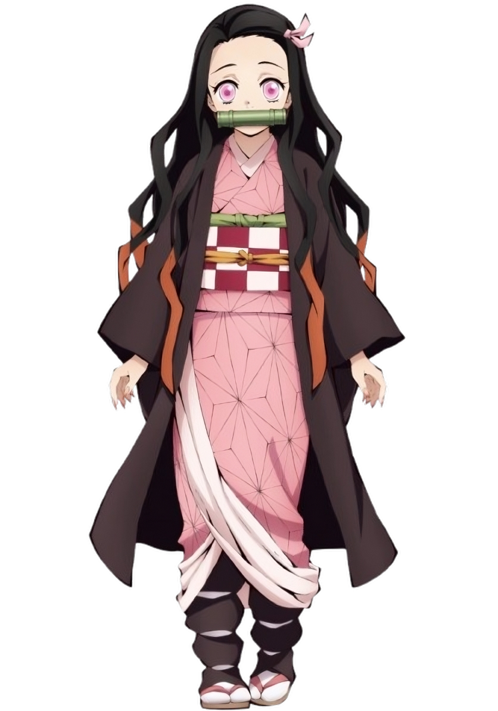
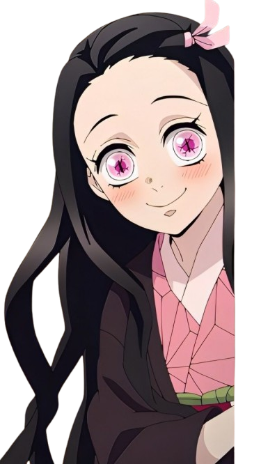
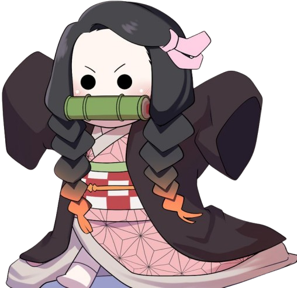
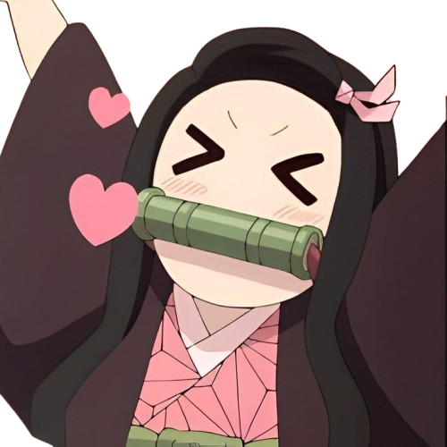

NEZUKO
Nezuko is a young girl with fair skin, visibly large,
prominent fangs, a slender build, and sharp, stiletto nails,
she is a demon and the younger sister of Tanjiro Kamado
and one of the two remaining members of the Kamado family.
Formerly a human, she was attacked and transformed into a
demon by Muzan Kibutsuji.
“ Things don’t go exactly the way
we want them to. We’re only human.
You get to decide where your happiness
comes from. What’s important is now. ”
— Nezuko Kamado